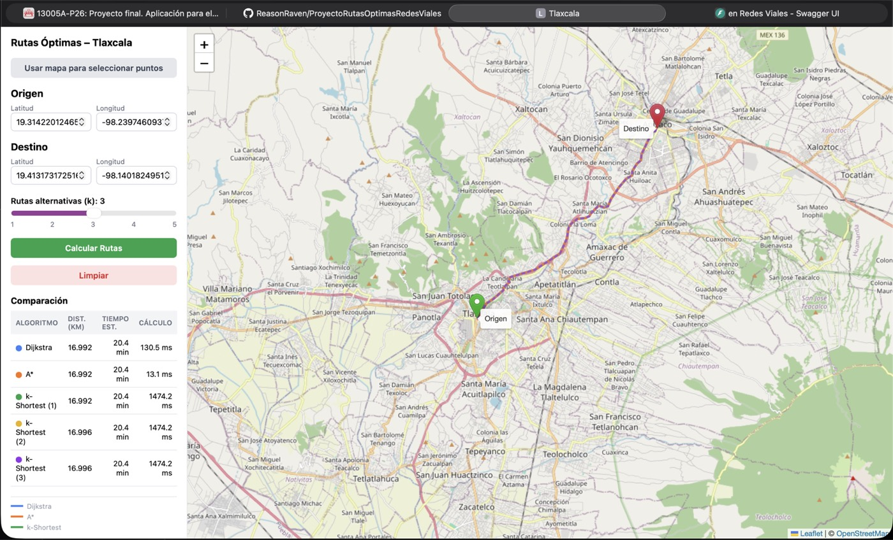
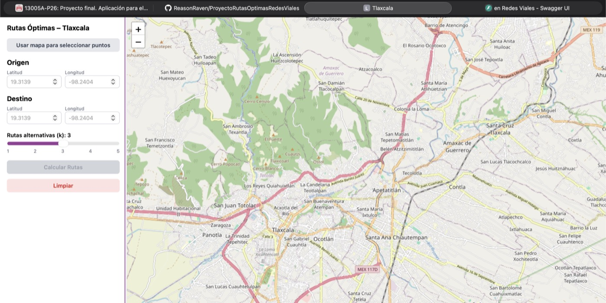

De que trata
Un grafo de 65 mil nodos sacado del mapa real
El backend descarga la red vial completa de Tlaxcala con osmnx (los datos abiertos de OpenStreetMap) y la convierte en un grafo de 65,461 nodos y 164,409 aristas, donde cada arista pesa lo que mide esa calle en metros.
El usuario pica dos puntos en el mapa. La app busca el nodo mas cercano a cada clic, corre los tres algoritmos sobre el mismo grafo y devuelve las rutas con su distancia, su tiempo estimado y cuanto tardo cada algoritmo en calcularla. Esa ultima columna es la interesante: es donde se ve la diferencia entre un algoritmo y otro.
Como se ve
La app corriendo
Panel de control a la izquierda, mapa de Leaflet a la derecha. Las tres rutas se dibujan encima del mapa con colores distintos y la tabla compara los resultados.

Antes de calcular, el panel espera a que el grafo termine de cargar en el servidor. El boton se habilita solo cuando /health responde que ya esta listo.

API
Endpoints del backend
El servidor es una API REST hecha con FastAPI. El frontend no sabe nada de algoritmos: solo manda un POST con las coordenadas y recibe las rutas en JSON.
| Metodo | Ruta | Que hace |
|---|---|---|
| GET | /health | Avisa si el grafo ya termino de cargar |
| POST | /routes/compare | Calcula los 3 algoritmos de un jalon |
| POST | /routes/dijkstra | Solo Dijkstra |
| POST | /routes/astar | Solo A* |
| POST | /routes/k-shortest | Las k rutas alternativas mas cortas |
POST /routes/compare
Content-Type: application/json
{
"origin_lat": 19.3139,
"origin_lng": -98.2404,
"dest_lat": 19.2900,
"dest_lng": -98.2100,
"k": 3
}
Respuesta
{
"dijkstra": {
"algorithm": "Dijkstra",
"coordinates": [[19.3139, -98.2404], "..."],
"distance_km": 16.992,
"estimated_time_minutes": 20.4,
"execution_time_ms": 130.5
},
"astar": { "...": "misma ruta, 13.1 ms" },
"k_shortest": [ { "..." }, { "..." }, { "..." } ]
}
FastAPI genera sola la documentacion interactiva en /docs, asi que se puede probar la API desde el navegador sin escribir nada de codigo.
@router.post("/routes/compare", response_model=CompareResponse, tags=["Rutas"])
def compare_routes(req: RouteRequest):
"""Calcula los tres algoritmos a la vez y devuelve sus rutas."""
try:
# De coordenadas (lat/lng) al nodo mas cercano del grafo real
G, D, origin, dest = _resolve_nodes(req)
dijkstra = run_dijkstra(G, origin, dest)
astar = run_astar(G, origin, dest)
k_shortest = run_k_shortest(G, D, origin, dest, req.k)
return CompareResponse(dijkstra=dijkstra, astar=astar, k_shortest=k_shortest)
except HTTPException:
raise
except Exception as e:
logger.exception("Error inesperado en /routes/compare")
raise HTTPException(status_code=500, detail=f"Error interno: {str(e)}")
Algoritmos
Dijkstra vs A*: la misma ruta, 10 veces mas rapido
Los dos encuentran exactamente la misma ruta, porque los dos garantizan el camino minimo. La diferencia esta en cuanto trabajo hacen para llegar ahi: A* usa una heuristica (la distancia en linea recta al destino) para no perder tiempo explorando calles que van para el lado contrario.
Python · NetworkXdef run_dijkstra(G, origin: int, dest: int) -> RouteResult:
t0 = time.perf_counter() # se cronometra el calculo
try:
path = nx.dijkstra_path(G, origin, dest, weight="length")
except nx.NetworkXNoPath:
raise HTTPException(404, "No existe ruta entre los puntos dados (Dijkstra)")
elapsed = (time.perf_counter() - t0) * 1000
return _build_result("Dijkstra", G, path, elapsed)
def run_astar(G, origin: int, dest: int) -> RouteResult:
heuristic = make_haversine_heuristic(G) # <- la unica diferencia real
t0 = time.perf_counter()
try:
path = nx.astar_path(G, origin, dest, heuristic=heuristic, weight="length")
except nx.NetworkXNoPath:
raise HTTPException(404, "No existe ruta entre los puntos dados (A*)")
elapsed = (time.perf_counter() - t0) * 1000
return _build_result("A*", G, path, elapsed)
def make_haversine_heuristic(G):
"""Distancia en linea recta al destino: le dice a A* hacia donde ir."""
def heuristic(u: int, v: int) -> float:
u_lat, u_lng = G.nodes[u]["y"], G.nodes[u]["x"]
v_lat, v_lng = G.nodes[v]["y"], G.nodes[v]["x"]
return haversine_distance(u_lat, u_lng, v_lat, v_lng)
return heuristic
Complejidad
| Algoritmo | Tiempo | Espacio | Nota |
|---|---|---|---|
| Dijkstra | O((V + E) log V) | O(V) | Usa cola de prioridad. Garantiza el camino minimo. |
| A* | O((V + E) log V) | O(V) | Mismo peor caso, pero explora muchos menos nodos gracias a la heuristica. |
| k-Shortest (Yen) | O(kV(V + E) log V) | O(kV) | Cada ruta extra obliga a recorrer el grafo otra vez. |
Validaciones
La API no confia en lo que le mandan
Con Pydantic, cada peticion se revisa antes de tocar el grafo: las coordenadas tienen que caer dentro de Tlaxcala, el origen no puede ser igual al destino y k tiene que estar entre 1 y 10. Si algo falla, regresa un 422 con el mensaje explicando que estuvo mal.
Python · Pydanticclass RouteRequest(BaseModel):
origin_lat: float
origin_lng: float
dest_lat: float
dest_lng: float
k: int = settings.k_default
@field_validator("origin_lat", "dest_lat")
@classmethod
def validate_lat(cls, v: float) -> float:
# El grafo solo cubre Tlaxcala: fuera de ahi no hay calles cargadas
if not (settings.bbox_lat_min <= v <= settings.bbox_lat_max):
raise ValueError(f"Latitud {v} fuera del rango de Tlaxcala")
return v
@model_validator(mode="after")
def origin_not_equal_dest(self) -> "RouteRequest":
if (abs(self.origin_lat - self.dest_lat) < 1e-6
and abs(self.origin_lng - self.dest_lng) < 1e-6):
raise ValueError("El origen y el destino no pueden ser el mismo punto")
return self
Frontend
Como React le habla a la API
Toda la comunicacion pasa por un solo archivo. Al estar tipado con TypeScript, si el backend cambia la forma de la respuesta el editor avisa antes de que el error llegue al navegador.
TypeScript · Reactconst BASE_URL = import.meta.env.VITE_API_URL ?? "http://localhost:8000";
// Envoltura generica para todos los POST: tipada, y con errores en español
async function post<T>(path: string, body: unknown): Promise<T> {
let res: Response;
try {
res = await fetch(`${BASE_URL}${path}`, {
method: "POST",
headers: { "Content-Type": "application/json" },
body: JSON.stringify(body),
});
} catch {
throw new Error("No se pudo conectar con el servidor. Verifica que el backend este corriendo.");
}
if (!res.ok) {
const err = await res.json().catch(() => ({ detail: res.statusText }));
// Pydantic regresa detail como arreglo en los errores 422
const detail = Array.isArray(err.detail)
? err.detail.map((e: { msg?: string }) => e.msg ?? JSON.stringify(e)).join(" | ")
: (err.detail ?? "Error desconocido");
throw new Error(detail);
}
return res.json() as Promise<T>;
}
export const api = {
health: (): Promise<boolean> => ...,
compareRoutes: (req: RouteRequest) => post<CompareResponse>("/routes/compare", req),
dijkstra: (req: RouteRequest) => post<RouteResult>("/routes/dijkstra", req),
astar: (req: RouteRequest) => post<RouteResult>("/routes/astar", req),
kShortest: (req: RouteRequest) => post<RouteResult[]>("/routes/k-shortest", req),
};
Como correrlo
Todo va en Docker
Backend y frontend viven cada uno en su contenedor y se levantan juntos con un comando. No hay que instalar Python ni Node: solo Docker.
Terminal# Primera vez (tarda 3-5 min mientras descarga el mapa de Tlaxcala) docker-compose up --build # Las siguientes veces arranca en ~20 segundos docker-compose up # App: http://localhost:3000 # Documentacion API: http://localhost:8000/docs
Por eso este proyecto no tiene demo publico como los demas: necesita descargar y mantener en memoria el grafo completo de Tlaxcala, que no cabe en un servidor gratuito.